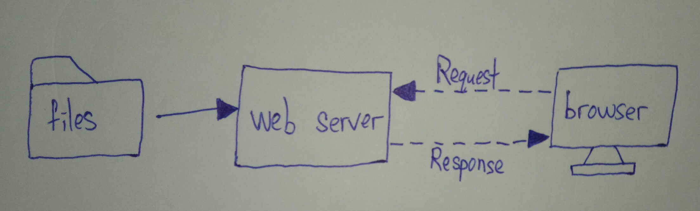

Web server is a database, it has data. Browser via internet send request to web server, in browser have user-agent, it will provide user detail of browse website, web server after receive will respond data of website to browser.
One of the tool is Git. Software developer can change the code in computer, after push new codes to git server, and pull, after put new codes into window explorer to overwrite. Window explorer is make address become folder to provide user to view, edit and others function.
SEO is a type of search engine optimize tools. SEO make search engine can read content of website to understand and push up the ranking of websites, and make website can up to Top 1 and let more user easy to search for website, and increase pageviews.